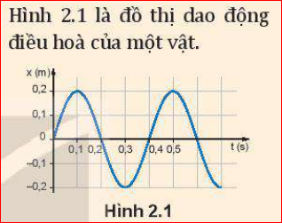
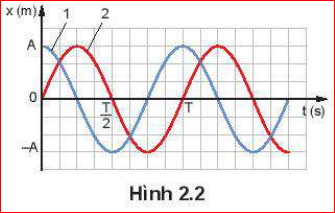
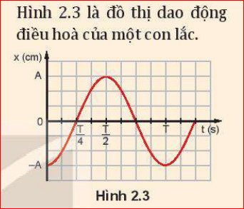
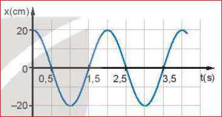
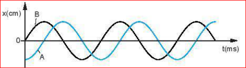

Chương 1 - Dao động điều hòa
Để vẽ đồ thị hoặc viết phương trình của một dao động điều hoà cần biết những đại lượng vật lí nào?
Từ đồ thị và phương trình của dao động điều hoà, ta có thể xác định được các đại lượng dùng để mô tả dao động điều hoà.
? Hình 2.1 là đồ thị dao động điều hoà của một vật. Hãy xác định:

1. Từ đồ thị:
2. Thời điểm:
? Từ Hình 2.1 hãy xác định tần số góc của dao động của vật.
Tần số góc được tính theo công thức: \( \omega = \frac{2\pi}{T} \)
Với \(T = 0,4\) s, ta có: \( \omega = \frac{2\pi}{0,4} = 5\pi \) (rad/s).
Pha ban đầu \(\varphi\) cho biết tại thời điểm bắt đầu quan sát vật dao động điều hoà ở đâu và sẽ đi về phía nào. Nó có giá trị nằm trong khoảng từ \(-\pi\) đến \(\pi\) (rad).

Trong khoa học và kĩ thuật, độ lệch pha quan trọng hơn pha vì nó là đại lượng không đổi. Công thức tính độ lệch pha: \( \Delta\varphi = \varphi_1 - \varphi_2 \).
? Hình 2.3 là đồ thị dao động điều hoà của một con lắc. Hãy cho biết:

1. Tại thời điểm ban đầu \(t=0\), vật đang ở vị trí biên âm \(x = -A\) và bắt đầu đi về vị trí cân bằng (hướng dương).
2. Khi \(t=0\), \(x = A \cos(\varphi) = -A \Rightarrow \cos(\varphi) = -1 \Rightarrow \varphi = \pi\) (rad).
✋ Hoạt động: Chứng minh độ lệch pha
Hãy chứng minh rằng độ lệch pha giữa hai dao động cùng chu kì bằng độ lệch pha ban đầu.
Xét hai dao động: \(x_1 = A_1 \cos(\omega t + \varphi_1)\) và \(x_2 = A_2 \cos(\omega t + \varphi_2)\).
Pha tại thời điểm \(t\) của dao động 1 là \(\Phi_1 = \omega t + \varphi_1\).
Pha tại thời điểm \(t\) của dao động 2 là \(\Phi_2 = \omega t + \varphi_2\).
Độ lệch pha tại thời điểm \(t\): \( \Delta\Phi = \Phi_1 - \Phi_2 = (\omega t + \varphi_1) - (\omega t + \varphi_2) = \varphi_1 - \varphi_2 \).
Kết quả này không phụ thuộc vào thời gian \(t\), do đó độ lệch pha luôn bằng độ lệch pha ban đầu.
Ví dụ 1: (Trích SGK Trang 12)
Đồ thị li độ - thời gian mô tả trên Hình 2.6. Biên độ \(A = 20\) cm; chu kì \(T = 2,0\) s. Xác định phương trình dao động.

\(A = 20\) cm; \(T = 2,0\) s \(\Rightarrow \omega = \frac{2\pi}{2,0} = \pi\) (rad/s).
Tại \(t=0\), \(x=20\) \(\Rightarrow 20 = 20 \cos(\varphi) \Rightarrow \varphi = 0\).
Phương trình: \(x = 20 \cos(\pi t)\) (cm).
Ví dụ 2: Hai vật dao động điều hoà A và B có cùng tần số nhưng lệch pha nhau được mô tả trên hình

a) Xác định li độ của B khi A có li độ cực đại.
b) Xác định li độ của A khi B có li độ cực đại.
c) Hãy cho biết A hay B đạt tới li độ cực đại trước (không kể thời điểm t=0).
d) Xác định độ lệch pha của dao động A so với dao động B.
Từ đồ thị, khi A chậm pha hơn B \(\pi/2\), khi A biên dương thì B ở B qua vị trí cân bằng đi theo chiều âm
Khi B cực đại thì A qua VTCB theo chiều dương.
Do B nhanh pha hơn nên B đến biên A trước
Độ lệch pha là \(\pi/2\). Dao động A chậm pha \(\pi/2\) so với dao động B.
Câu 1: Đại lượng nào đặc trưng cho độ lệch về thời gian giữa hai dao động điều hòa cùng chu kì?
Câu 2: Một vật dao động với chu kì 2s. Tần số góc của vật là:
Câu 3: Đơn vị của tần số là:
Câu 4: Hai dao động cùng pha khi độ lệch pha bằng:
Câu 5: Pha ban đầu cho biết điều gì?
Bài 1: Một vật dao động điều hoà có biên độ 10 cm, tần số 5 Hz. Tại \(t=0\) vật có li độ cực đại dương. Viết phương trình dao động.
\(A = 10\) cm; \(f = 5\) Hz \(\Rightarrow \omega = 2\pi f = 10\pi\) (rad/s).
Tại \(t=0\), \(x=10\) cm \(\Rightarrow 10 = 10 \cos(\varphi) \Rightarrow \varphi = 0\).
PT: \(x = 10 \cos(10\pi t)\) (cm).
Bài 2: Con lắc 1 có \(x_1 = 20 \cos(20\pi t + \pi/2)\). Con lắc 2 cùng \(A, f\) nhưng trễ pha \(T/4\) so với con lắc 1. Viết phương trình con lắc 2.
Trễ pha \(T/4\) tương ứng với độ lệch pha là \(\Delta\varphi = \frac{2\pi}{T} \cdot \frac{T}{4} = \frac{\pi}{2}\).
Pha ban đầu con lắc 2: \(\varphi_2 = \varphi_1 - \pi/2 = \pi/2 - \pi/2 = 0\).
PT: \(x_2 = 20 \cos(20\pi t)\) (cm).
Bài 3: Xác định chu kì và tần số của dao động \(x = 5 \cos(4\pi t + \pi/3)\).
\(\omega = 4\pi\) (rad/s).
Chu kì: \(T = \frac{2\pi}{\omega} = \frac{2\pi}{4\pi} = 0,5\) (s).
Tần số: \(f = \frac{1}{T} = 2\) (Hz).